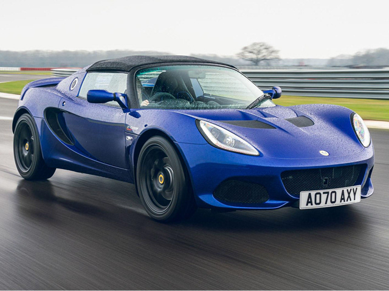

Нажмите на изображение, чтобы открыть в полном размере (новая вкладка)
Lotus Elise Sport 240 Final Edition — прощальная версия легендарной модели, выпускавшейся с 1996 по 2021 год. Автомобиль весит менее 900 кг и предлагает непревзойдённую обратную связь от руля.
Elise Sport 240 — это последний представитель чисто бензиновых Elise, с атмосферным двигателем, работающим до 8000 об/мин, и минимальной электроникой. Алюминиевое шасси и композитный кузов обеспечивают массу всего 914 кг, что даёт невероятную манёвренность и ощущение “картоподобного” управления. Final Edition получила улучшенные тормоза, спортивную подвеску и эксклюзивные элементы отделки. Это настоящий оммаж к 25-летней истории модели.